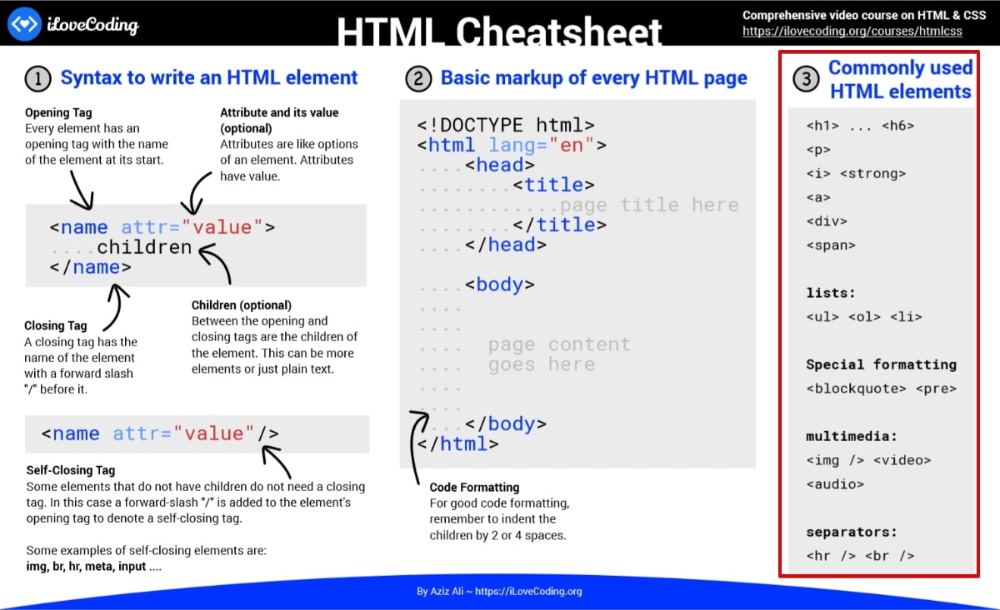
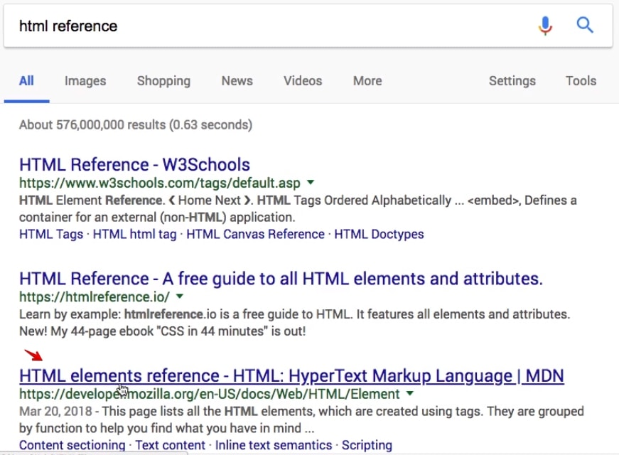
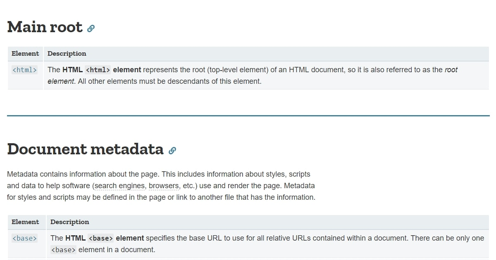
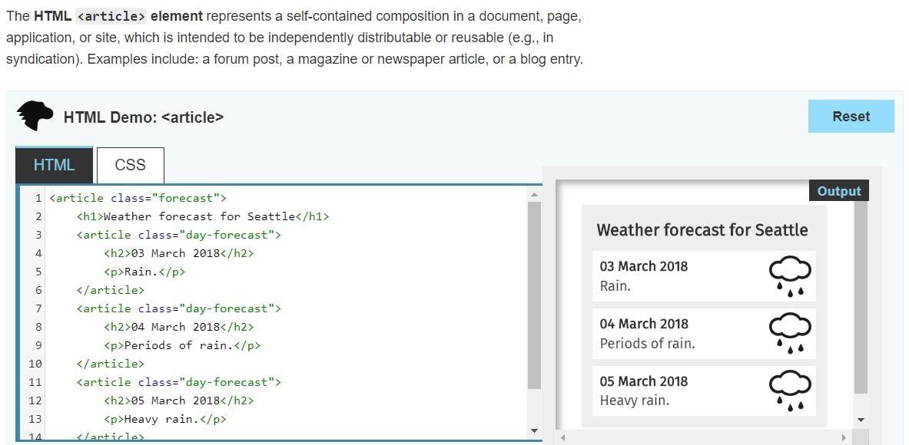
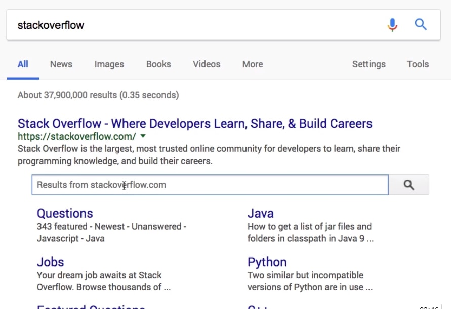
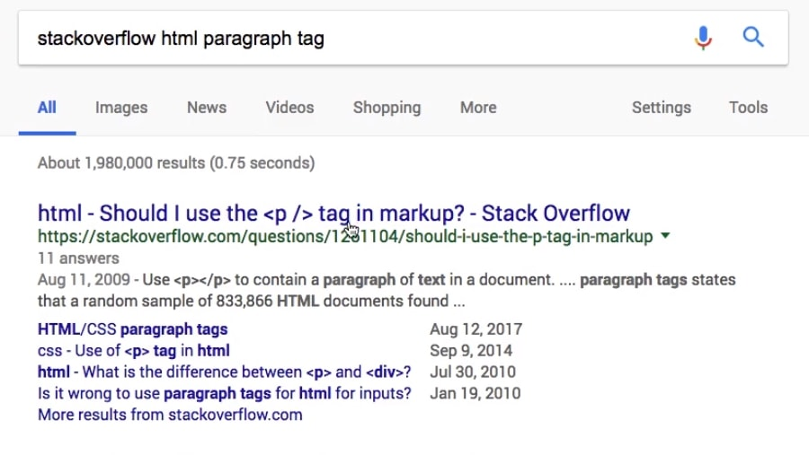

So far you have been writing HTML elements but one question may arise is that How do I remember all of these elements? That is a great question, since there are many of them.
As you can see above, In the cheat sheet provided, you have a section with the most commonly used HTML elements.
In this course we are going to go through all of them, and just with these elements, you are going to have enough knowledge to make fancy websites.
Besides this HTML Cheatsheet, there are two additional resources I want to share with you:
Besides the cheat sheets provided if you want even more information, just google for "HTML reference".
You'll find the third result to be the Mozilla HTML elements reference, so just ignore all the previous ones.
Basically Mozilla is the same organization that created the Firefox browser. They are also collecting a lot of information and building a great reference of many things related to technology and web development, including JavaScript, HTML, CSS, and others as well.

If you simply scroll down after accessing the page, you'll be able to see the different elements that you can use in HTML as displayed above. There is information about the <html> element, <link>, <meta>, <title>, <style>, <body>, and many others organized by different sections of usage.
Of course right now it may not make a lot of sense to you but as you finish the course all of this is going to make sense, and you can navigate through different explanations on the elements and have a pretty handy example of use of that element. But worry about it right now, it is just a reference that you can use it later.
After clicking any element that you want to know some information about, you'll be able to see the code of a very handy example of how to use that element, and what it's going to do.
Mozilla HTML Reference is a very handy resource that you should bookmark.
One important rules I want to emphasis on is:
Do not want to commit to memory anything that can be looked up in a book.
...and this same concept applies for HTML and any other coding language that you are learning. You do not want to memorize these things. I have never memorized it. Whenever I want to lookup something I simply google it, and look at the authentic sources just like Mozilla Documentation or some other website depending on the technology that I'm looking into.
Another very handy resource to know about is Stack Overflow. Stack Overflow is a question and answer website for developers, and it's another great reference that you can use.
You can look for your questions directly in the searchbox of the website as shown above in the results, or you can google for "stackoverflow" and the question that you have.
Let's say that you have a question about the HTML paragraph tag, this is how you should search on Google to see the results from Stack Overflow:
Do not attempt to memorize it, these concepts are automatically going to ingest in your brain the more you use it. The more you practice, the more it will become second nature.
Thats pretty much it, I will talk to you in the next lesson.